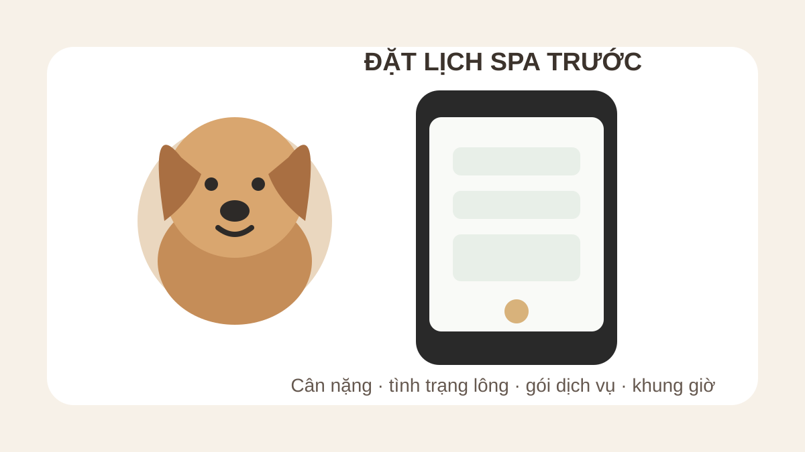

Spa chó Bình Thạnh có nên đặt lịch trước?
Trả lời nhanh: nếu bạn muốn chủ động khung giờ, biết trước gói phù hợp và giảm việc trao đổi lại khi tới nơi, nên đặt lịch Spa chó trước. Hãy gửi cân nặng gần nhất, giống chó, tình trạng lông và nhu cầu tắm/cạo/cắt tỉa để Lumi Pet có đủ thông tin tư vấn. Đây là khuyến nghị chuẩn bị, không phải tuyên bố rằng Lumi Pet bắt buộc mọi khách phải đặt trước.

Vì sao nên đặt lịch trước khi đưa chó đi Spa?
Đặt trước giúp hai bên thống nhất nhu cầu trước khi bé tới. Với Spa chó, chỉ nói “đi tắm” đôi khi chưa đủ: cân nặng, độ dài và tình trạng lông, nhu cầu cạo hay cắt tỉa đều có thể ảnh hưởng đến việc chọn gói.
Chủ động khung giờ
Nếu bạn cần đi vào một thời điểm cụ thể, đặt trước giúp gửi khung giờ mong muốn để Lumi Pet xác nhận thay vì mặc định còn chỗ. Bài này không tự công bố số lượng slot hoặc thời gian xử lý vì các dữ kiện đó cần được xác nhận theo lịch thực tế.
Chọn đúng gói trước khi tới
Một bé chỉ cần vệ sinh cơ bản sẽ khác bé cần cắt tỉa form hoặc đang rối lông. Bạn có thể đọc nên tắm vệ sinh hay tắm cạo cho chó và dịch vụ Grooming chó mèo Bình Thạnh để hiểu khác biệt trước khi book.
Đặt lịch Spa chó cần gửi thông tin gì?
Một tin nhắn đặt lịch rõ ràng nên có các thông tin sau:
- Cân nặng gần nhất: giúp đối chiếu đúng nhóm giá.
- Giống chó: hỗ trợ mô tả loại lông và nhu cầu chăm sóc.
- Tình trạng lông hiện tại: ngắn/dài, có rối, bết hoặc vùng cần lưu ý hay không.
- Dịch vụ mong muốn: tắm vệ sinh, tắm + cạo, tắm + cắt tỉa hoặc cần tư vấn.
- Lưu ý về da, sức khỏe hoặc hành vi: chỉ cung cấp những gì bạn biết; nếu có vấn đề sức khỏe, việc đánh giá y khoa thuộc bác sĩ thú y.
- Khung giờ mong muốn: để Lumi Pet xác nhận theo lịch thực tế.
Nếu chưa biết chọn gói nào, đừng đoán. Gửi ảnh lông hiện tại và mô tả mục tiêu chăm sóc để trao đổi trước.
Có nên xem bảng giá trước khi đặt lịch?
Có. Việc xem bảng giá Spa thú cưng Lumi Pet giúp bạn biết cách chia nhóm cân nặng và mức giá gói cơ bản đã được công bố. Khi bé nằm sát mốc cân, nên cân lại để tránh hiểu nhầm nhóm giá.
Chi phí cuối cùng không nên được suy ra bằng cách tự cộng các khoản không có dữ liệu. Nếu lông rối, cần sản phẩm chuyên dụng hoặc có nhu cầu tạo kiểu, hãy hỏi Lumi Pet xem trường hợp cụ thể có hạng mục bổ sung nào áp dụng hay không.
Những trường hợp nên báo kỹ trước khi đưa bé tới
Bé lần đầu đi Spa hoặc sợ người lạ
Nếu bé chưa quen môi trường grooming, hãy nói trước về phản ứng thường gặp. Bài chó sợ người lạ khi đi Spa có thêm cách chuẩn bị.
Bé sợ máy sấy hoặc cắt móng
Đừng chờ tới lúc thực hiện mới báo. Bạn có thể tham khảo chó sợ máy sấy khi grooming và chó sợ cắt móng khi grooming.
Lông đang rối nhiều
Rối lông là một tình trạng cần kiểm tra riêng. Xem trước gỡ rối lông chó giá bao nhiêu để hiểu cách Lumi Pet trình bày hạng mục này thay vì mặc định nằm trong mọi gói.
Đặt trước bao lâu là đủ?
Không nên bịa một mốc “X giờ” hoặc “X ngày” cố định khi lịch trống thay đổi theo thời điểm. Cách an toàn là mở kênh đặt lịch, gửi ngày/khung giờ mong muốn và chờ xác nhận. Nếu cần một giờ cụ thể, càng nên liên hệ trước thay vì tới trực tiếp rồi kỳ vọng có slot ngay.
Cách đặt lịch Spa chó tại Lumi Pet
Bạn có thể vào trang Đặt lịch Spa, xem Spa thú cưng Bình Thạnh hoặc dùng trang Liên hệ để Gọi/Zalo và xác nhận nhu cầu. Khi gửi, hãy kèm cân nặng, giống chó, tình trạng lông, dịch vụ và khung giờ mong muốn.
Câu hỏi thường gặp
Đi Spa chó ở Bình Thạnh có bắt buộc đặt lịch trước không?
Bài này không khẳng định có quy định bắt buộc. Khuyến nghị là nên đặt trước để chủ động thời gian và nhận xác nhận theo lịch thực tế.
Chưa biết gói nào thì có đặt lịch được không?
Bạn có thể gửi tình trạng lông, cân nặng và mục tiêu chăm sóc để trao đổi trước khi chốt gói.
Có nên báo cân nặng khi book?
Có. Bảng giá Spa chó được chia theo nhóm cân nặng, vì vậy cân nặng gần nhất là thông tin hữu ích khi dự trù chi phí.
Muốn gọi hoặc Zalo thì vào đâu?
Dùng trang Liên hệ Lumi Pet để lấy thông tin liên hệ hiện hành thay vì dựa vào số được chép lại ở nguồn không xác minh.
Bài liên quan
Checklist trước khi đặt lịch Spa chó mèo · Bảng giá Spa thú cưng · Grooming chó mất bao lâu? · Cách chọn Spa thú cưng Bình Thạnh